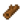

Mermeladas y Encurtidos
- Para un análisis detallado de las ganancias utilizando la Envasadora, consulte Productividad de la envasadora.
Las mermeladas y los encurtidos se pueden producir a partir de fruta y verduras, respectivamente, al introducirlos en una envasadora. El valor de un bote de mermelada o encurtidos es de (2 * Valor base del cultivo + 50).
Una envasadora necesita 4000 minutos para producir un bote de encurtidos o mermelada. Este proceso lleva unos 2-3 días de juego dependiendo de los horarios de sueño. [1]
| Imagen | Nombre | Descripción | Ingredientes | Se consigue |
|---|---|---|---|---|
| Envasadora | Convierte las verduras en encurtidos y la fruta en mermelada. |  Madera (50) |
Productos
La calidad de los ingredientes no afecta al producto final. El valor del producto final está determinado por el valor base (es decir, sin estrella de plata u oro) de la fruta/verdura. Sin embargo, el producto de la envasadora es siempre más rentable que incluso el ingrediente inicial con estrella de oro, aunque el margen de beneficio es menor en comparación con el producto normal.
| Imagen | Nombre | Descripción | Ingredientes | Tiempo | Precio de venta |
|---|---|---|---|---|---|
| Encurtidos | Un frasco de encurtidos casero. | Cualquier vegetal | |||
| Mermelada | Viscoso. | Cualquier fruta |
Regalos con mermeladas
| Reacciones de Aldeanos
| |
|---|---|
| Le gusta | |
| Odia | |
Regalos con encurtidos
| Reacciones de Aldeanos
| |
|---|---|
| Le encanta | |
| Le gusta | |
| Odia | |
Lotes
Mermelada es uno de los productos a entregar del  Lote Origen Artesanal en la Alacena.
Lote Origen Artesanal en la Alacena.
Curiosidades
- La mermelada del carro ambulente no será de ninguna fruta en particular y se venderá por
 160o.
160o. - Los encurtidos del carro ambulante no serán de ningún vegetal en particular y se venderá por 100o.
- En nuevas versiones, las mermeladas y encurtidos toman un color caracteristico dependiendo del producto que se use.
Referencias
- ↑ El tiempo de procesamiento se calcula de forma diferente cuando estás dormido y cuando estás despierto. El tiempo, en términos del juego, es de 1 hora = 60 minutos cuando estás despierto, y de 1 hora = 100 minutos cuando estás dormido. Así que si duermes un día entero, la máquina procesaría 2400 minutos (100 × 24). Si trabajas desde las 6:00AM hasta las 12:00AM y duermes 6 horas, la máquina procesaría 1680 minutos cada día (60 × 18 + 100 × 6). Si trabajas de 6:00AM a 2:00AM y te desmayas (ocasionando que duermas durante 4 horas), la máquina procesaría 1600 minutos cada día (60 × 20 + 100 × 4).